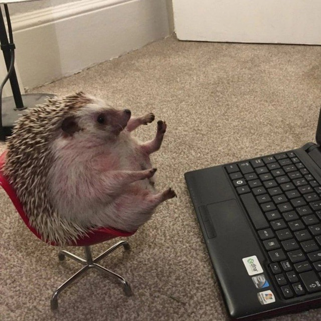

Навыки и умения:
Python, JavaScript, Mediapipe, HTML/CSS
Я использую
VSCode, PyCharm, Gitflic
Обо мне:
Учусь на 2 курсе МГТУ им. Баумана на кафедре ИУ9.
Занимаюсь задачей обнаружения точек пальцев,
калибровкой камеры, расчётом соотношений координат реального и виртуального мира
и реализацией полученных математических задач на стороне пользователя и webVR сцены.
Зайковская Екатерина. Капитан
Python Developer / Frontend Developer